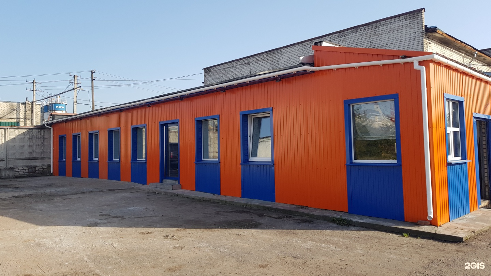
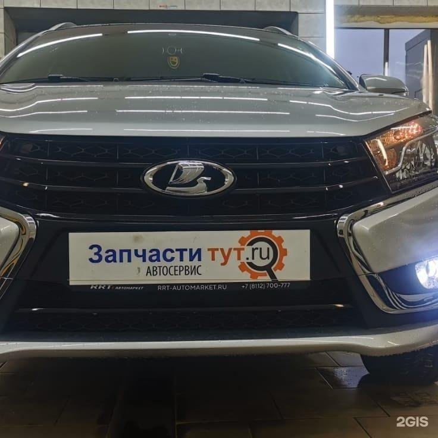
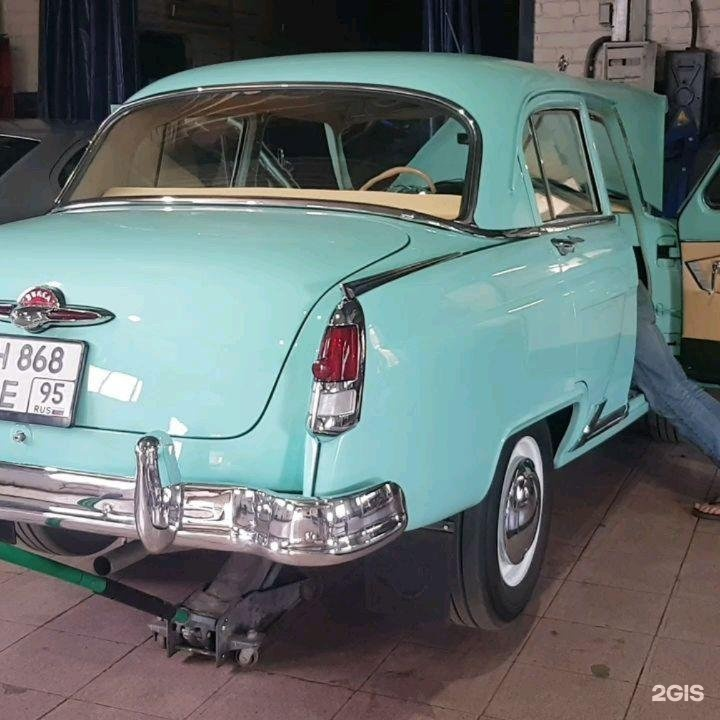
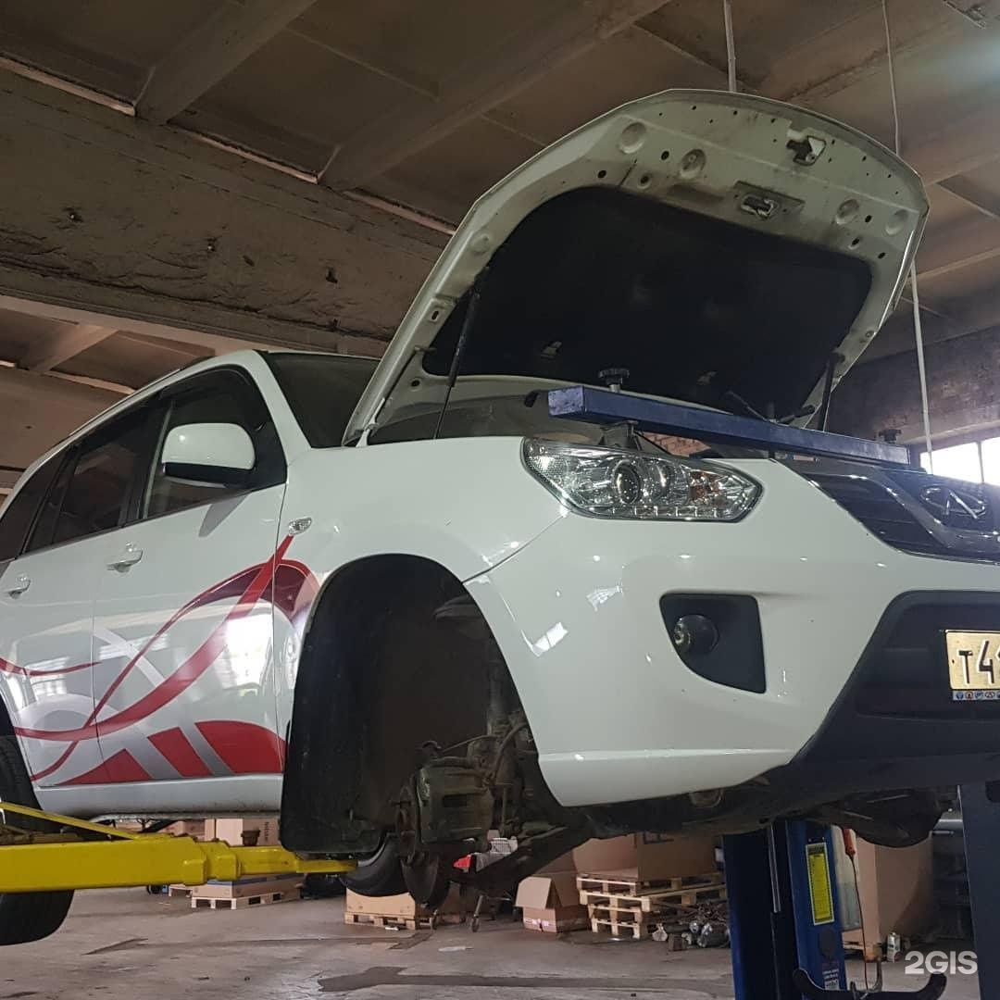

Легковой автосервис
Запчасти тут
Диагностика и ремонт легковых автомобилей
От проверки неисправности до работ с двигателем, ходовой и кузовом. Нужный ремонт можно обсудить по телефону.

Часы работы
Пн–Пт 10:00–19:00
Рейтинг
4.9 из 5 · 37 оценок в 2ГИСЦены
Прайс · 14 позиций
Прайс проверен 29.10.2026. Актуальную стоимость уточняйте по телефону.
Прайс в 2ГИСШиномонтаж
Полный шиномонтаж (с/у колес, мойка, бортировка, балансировка, упаковка)
| Тип автомобиля | Размер и цена |
|---|---|
| Легковой |
|
| Вэн, Джип, Кроссовер |
|
| Коммерческий транспорт |
|
Техническое обслуживание ТО
Замена масла в двигателе + масляный фильтр + воздушный фильтр
наличие защиты двигателя может увеличить цену услуги
1000–1200 ₽
Комплексная диагностика
Осмотр автомобиля перед покупкой
Что входит и условия
1. Визуальный осмотр внешнего состояния: - Визуальный осмотр зазоров и общего состояния элементов кузова. - Проверка ЛКП толщиномером - Проверка идентификационных номеров 2. Технический осмотр основных узлов и агрегатов на подъемнике по более чем 20 пунктам: - Органолептический осмотр - Диагностика с использованием спец. инструмента 3. Компьютерная диагностика: - На наличие ошибок системы - Соответствие пробега - Исправности систем безопасности 4. Проверка юридической чистоты по базам данных: - ГИБДД (регистрация, собственник, штрафы и т.д.) - Страховых (участие в ДТП) - Банков (наличие залогов и обременений) Внимание! Наш автосервис не занимается автоподбором. Мы не даем показания к покупке или отказа от автомобиля а делаем заключение об общем состоянии т.с., основываясь на собственном опыте и профессионализме. Решение о сделке, принимается исключительно покупающей и продающей стороной. Претензии по осмотру, возникшие далее в процессе эксплуатации автомобиля не принимаются.
3000 ₽
Компьютерная диагностика
1500 ₽
Заправка кондиционера
Экспресс заправка кондиционера
без проверки системы
1500 ₽
Заправка кондиционера с проверкой системы
Выявление возможных утечек
3000 ₽
Услуги
С чем можно обратиться
Компьютерная диагностика автомобилей
Замена масла
Кузовной ремонт
Развал-схождение
Ремонт ходовой части автомобиля
Шиномонтаж
Ремонт бензиновых двигателей
Ремонт дизельных двигателей
Обсудите ремонт своего автомобиля
ПозвонитьОтзывы
За что хвалят
Один посетитель хвалит понятные объяснения после диагностики.
В одном из отзывов положительно оценивают скорость и результат работы.
Один клиент положительно описывает зону ожидания.
Пересказ мнений посетителей без имён авторов. Все отзывы в 2ГИС
Фото
Сервис изнутри



Контакты
Как нас найти
Часы работы
Пн–Пт 10:00–19:00
Телефон
+7 (909) 573-43-61